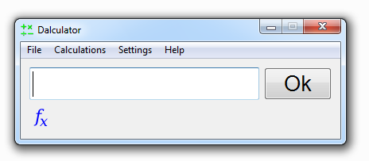

The basics
This page exlpains how to calculate something using Dalculator.
In fact it's very simple, when you start Dalculator it will look like this:

Just type the calculation you want to do in the input box, and press Enter or click Ok.
For example, if you want to know the answer to (5+2)*3, you simply type: (5+2)*3 and press Enter or click Ok.
The answer will appear in the input box now, which of course is 21.
The operators
Dalculator is mainly made for quick simple calculations, although it has a lot of operators built in. The following operators are built in:
| Operator | Priority | What does it do |
| x^y | First | Gives the yth power of x |
| x~y | First | Gives the yth root of x this is equal to x^(1/y), so x~2 is the square root of x |
| x*y | Second | Multiplies x by y |
| x/y | Second | Divides x by y |
| x%y | Second | Gives the remainder of x/y |
| x+y | Third | Adds x to y |
| x-y | Third | Subtracts y from x |
| x<y | Fourth | Compares x with y, gives 1 if x is smaller than y if not it will give 0 |
| x>y | Fourth | Compares x with y, gives 1 if x is greater than y if not it will give 0 |
| x&y | Fifth | Calculates the bitwise and of x and y |
| x|y | Fifth | Calculates the bitwise or of x and y |
| x=y | Sixth | Makes x equal to y, x must be a variable! |
The operators with the first priority will be calculated first, then the operators with the second priority, etc. This is the same as with normal mathematics. And as in normal mathematics you can use brackets to give something priority above everything else. For example: 2+5*3 results in 17 (2+15), but (2+5)*3 will result in 21 (7*3). Remember to always close every bracket you use!
Hexadecimal and octal
You can use hexadecimal and octal numbers.
For example, you can write: 2*0xff, because 0xff is 255 in decimal the output will be: 510.
So you can use hexadecimal numbers by writing 0x first and then the number (case insensitive).
You can use octal numbers in a similair way, just put a 0 before the octal number: 072 is 58 in decimal.
You can specify the format of the ouput to be decimal (255), scientific (2.55e2), hexadecimal (0xff), octal (0377), binary (11111111), time (see Calculating with time) or auto (which chooses automatically between decimal, scientific or time). Note that, even though you can specify binary as output type, you can't use binary numbers as input. Also note that it isn't posible to use point numbers with hexadecimal and octal (for example: you can't write 1.5 in octal, but you can write 01+05/10). This means that binary, octal or hexadecimal output also is rounded.
Calculating with time
Dalculator can calculate with time, for example: 2*01:30:00 will output 03:00:00 (if the output type is set to time or auto).
It uses time as an unit, not a date. So 12:00 + 14:00 (12 hours + 14 hours) is simply 26:00:00 (26 hours).
If you store a time value in a variable (see What are variables for more info) you'll notice it stores the time in seconds: a = 1:30, a is now 5400.
There are several ways to use time as an unit, you can write: hours:minutes, or: hours:minutes:seconds.
It is possible to write 0:77 (0 hours and 77 minutes), which is the same as: 1:17.
It is possible to add up to 3 decimals after the seconds, so the smallest amount of time you can give in is 1 millisecond.
For example: 3:24:56.32 is: 3 hours, 24 minutes, 56 seconds and 320 millisecond.
Other syntaxis notes
Not only integer numbers are allowed, but also point numbers are allowed.
But instead of using a ',' you should use a '.', so it's 1.5 instead of 1,5.
The commas are used for something else (see: What are functions for more info).
You can also use whitespaces (that are spaces and tabs) where you want them.
Except in names of variables and functions, for more information about names see: Naming variables & functions.
So 100 000 * 2 is equal to 100000*2.